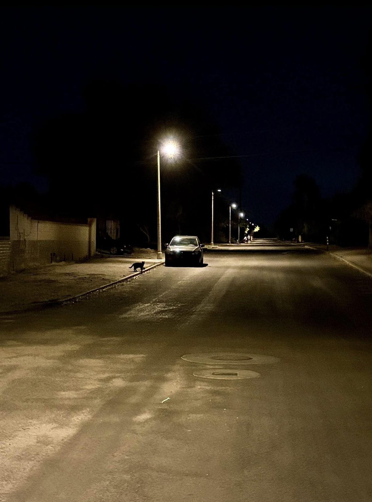
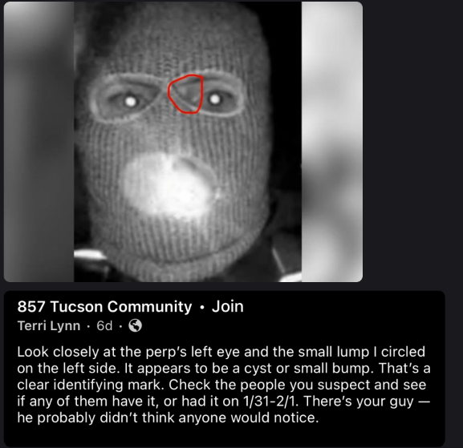
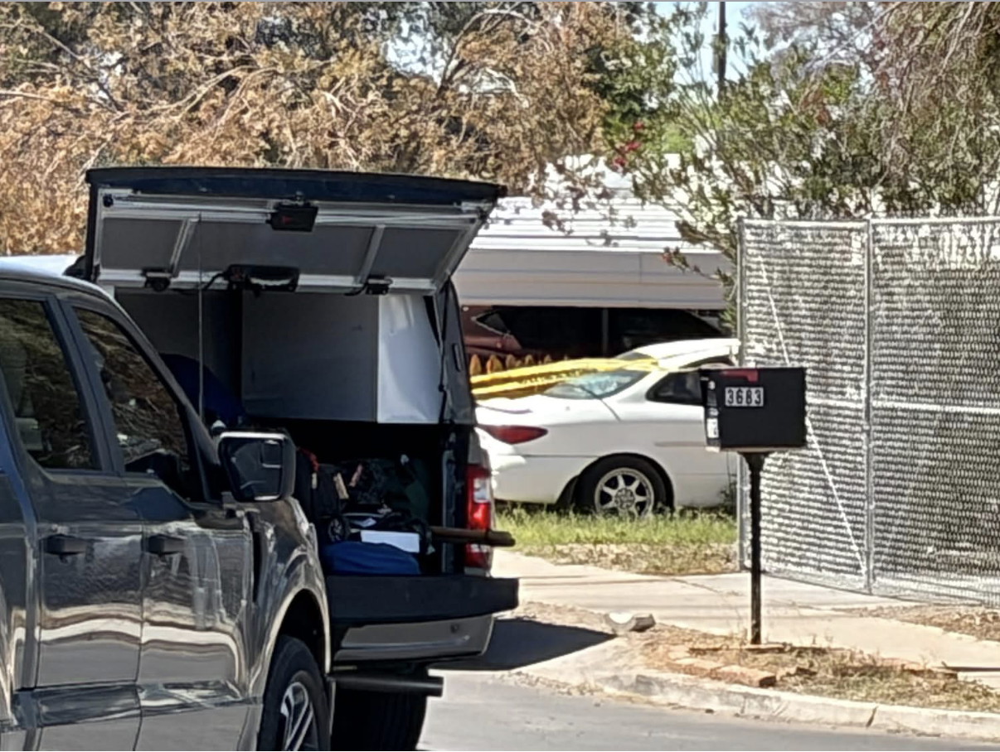
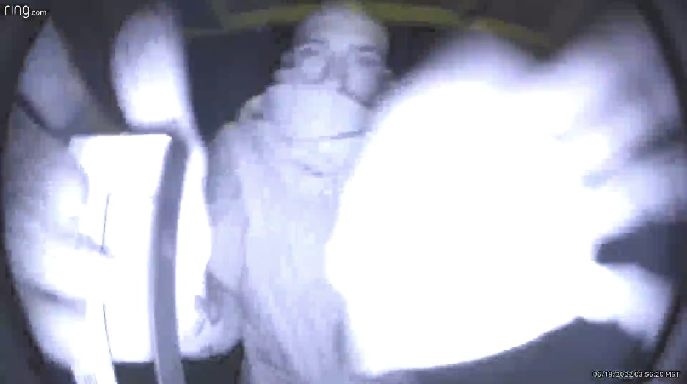
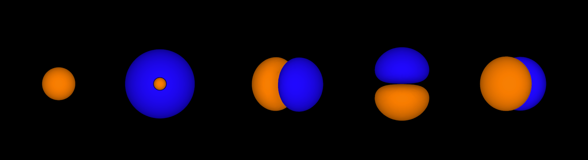
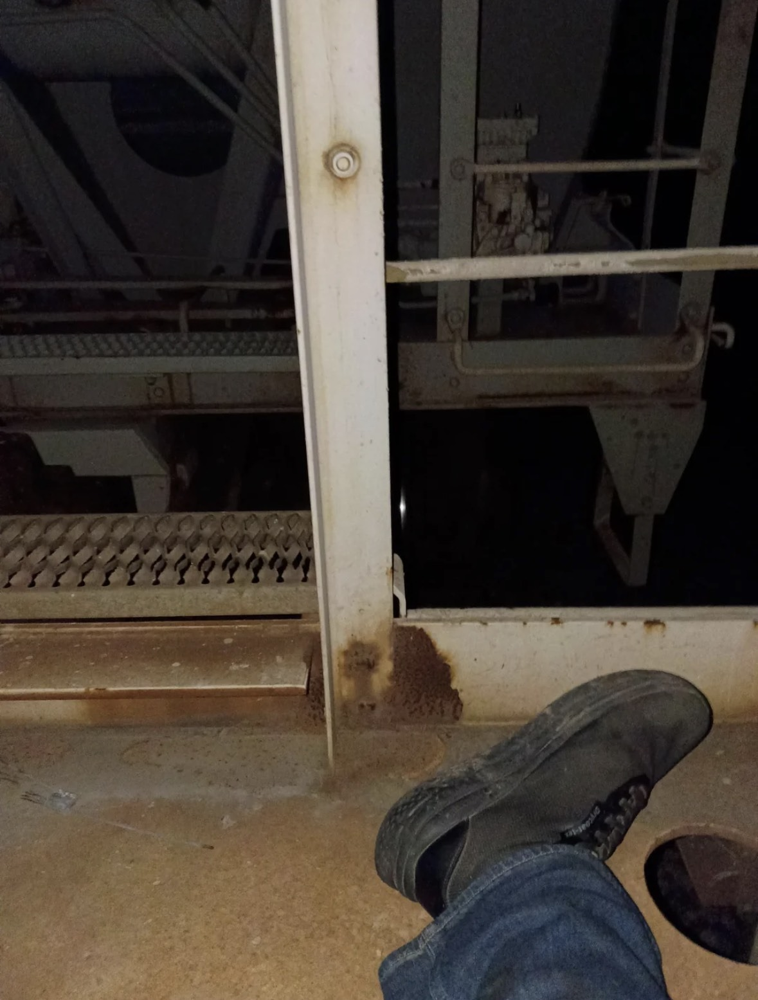

BLOOD IN THE WIRE
ARCHIVE NODE // PUBLIC MIRROR // DO NOT TRUST TIMESTAMPS
if something disappears it was probably there first
The White Truck Pattern
open node // White contractor truck near mailbox street.posted: 2026-03-18
validator gate test entry
open entry // testing all guardrail checks passposted: 2026-03-18

Same Place Same Time
open entry // it happened again -- same position, same orientation, same lot -- eleven daysposted: 2026-03-18

Not Me. But Me.
open entry // The photo they sent of me but not me. Close enough to pass. Not close enough to fool me.posted: 2026-03-18
the man with the clipboard
There is a man I keep seeing in the parking lot with a clipboard. I have seen him four times now in eleven days and each time he is performing the same routine: walks the perimeter, makes a half-gesture with the pen, moves on. The uniform reads property management but the company name on the board does not appear in any search I have run and I have run three separate ones using slightly different search strings to account for abbreviation. Nothing comes back. The company does not exist in a way that a real property management company would exist if it had been operating in this city for any length of time.
I want to be careful about what I am claiming here. I am not claiming the company is fake. I am claiming the company is not findable, which is a different thing, and the difference matters because unfindable is a category that real things can also occupy. I know how to run a search. I know what the absence of results means versus what zero results means. This is zero results, which is not the same as absence. Zero results means the trail was cleaned or was never made.
He has a routine and the routine is too consistent to be natural. Real property management work is reactive. You go where the problem is. You do not walk the same perimeter at the same approximate time on eleven-day intervals. You do not hold the clipboard facing outward unless you want to appear occupied while your attention is directed elsewhere. I know what I am describing. I have been watching long enough now to name it.
posted: 2026-03-18
The Feed Shows Truths
open entry // Feed screenshot showing illegal and amoral drug use, a direct feed of sins and sinners.posted: 2026-03-18
IT LOOKED LIKE THIS BUT WORSE
This is the closest thing I have to a useful rendering and even this is wrong. The shape is too calm here. In person it had that half-finished look like it was still trying to decide how much of itself to show.
I do not mean a ghost exactly. I mean something that stood where a person would stand and used the outline of a person because that is easier for the eye to accept. It was darker than this and less stable around the edges.
If I say it looked like smoke people hear smoke and that is not right. If I say it looked like a man people hear a man and that is also not right. It looked like this but worse.
further evidence, they said
open entry // utility truck number changed, neighbor coordination confirmed, photograph logged as placed evidenceposted: 2026-03-18
The Van Is Always There
White van, outside my house, same spot. It was there when I woke up. It is there now. I have not seen anyone get in or out. There is no work being done on the block. There is no reason for a van to hold that position for the amount of time this van has held it. I photographed it again.

posted: 2026-03-18
have you seen this man

I keep seeing this man in places that do not connect. Parking structures. Walkups. Convenience stores. The edge of lots where there should not be anyone standing that still for that long.
He seems to appear more often when there is a camera nearby. When I notice him, he is already turned away or moving off like he knew exactly how long he could remain visible.
The last close interaction went bad fast and I am not going to write the whole thing out here. If you know who he is, send information only. Do not tell him you saw this page.
known details
seen at parking structures, convenience stores, and near apartment walkups
usually turns away before full face is visible
appears more often after dark or during camera blind spots
has been observed alone but may not be acting alone
do not approach
if you recognize him, send information only
do not tell him you saw this page

entry_0004 :: orbit map, or something like it
21:09 — diagram found in the glove box -- five orbital groupings -- I did not put it there
I found this printed out and folded inside the owner's manual of my car. I do not know when it got there. The owner's manual was in the glove box where it always is but I have not opened that compartment in probably three years and this was folded in half and tucked into the back page like someone had used it as a bookmark. I am not saying someone was in my car. I am saying this was not there before.
What it looks like is a diagram of orbital positions. I know what that means and I know how it sounds and I am telling you what it looks like, not what it means. Five configurations. The two colors, orange and blue. The way the smaller ones sit inside or alongside the larger ones in each grouping is deliberate. That is not random. Random does not produce five variations of the same structural idea arranged left to right in an order that escalates.
I showed it to the man at the hardware store because I knew he would not ask the wrong questions and he looked at it for maybe ten seconds, then he handed it back and said that it reminded him of Caleb Dunn. I did not ask him why. I did not want that answer in the room.
The thing about god-signals is that they are not addressed to you, specifically. But they are arranged so that you are the only one who can read them. That is the whole point. If everyone could read them it would just be information. This is not information. This is instruction I have not yet earned the context to follow.
posted: 2026-03-17
entry_0003 :: no face again
17:45 — same man, different location, still no face. Every time he passes he's already turning away. Same gait. Same shoulder angle. Same exit pattern.
17:48 — I stopped writing "coincidence" in the margin.
posted: 2026-03-17
entry_0002 :: sighting
open sighting-0002 // 16:52 // repeat appearance // same stanceposted: 2026-03-17
entry_0001 :: tuesday
14:11 — Same silver sedan as yesterday. Not close enough to read plate, but the left tail light has a vertical crack. I wrote that down two days ago. Same crack.
14:26 — Woman in red jacket at the bus stop near 31st. I passed once, doubled back after fuel, she was still there but facing the opposite direction. Could be normal. Felt rehearsed.
14:37 — If this is confirmation bias, why are the details repeating before I say them out loud?
posted: 2026-03-17
The Leg Changed
THAT IS NOT MY LEG. I have looked at this image for two days and it is not my leg. Someone sent this and labeled it as mine and the label is wrong. I know what my leg looks like. I know the specific scar on the left knee from the thing that happened in 2019 and it is not in this image. Whatever they are claiming this documents, this does not document me. This documents something they want me to believe is me. I am keeping it because it is evidence of the substitution.

posted: 2026-03-18
signal overlap // the documentation watches back
open node // the interval matches the observation window -- documentedposted: 2026-03-18
Depth Zero Unique Branch Test
open entry // forced depth0 branch to new unique node -- validation runposted: 2026-03-19
Depth Zero Convergence Block Test No Flag
open entry // depth0 must block convergence even without no-convergence flagposted: 2026-03-19
related fragments // some moved
- node-depth-zero-conve-d0-20260318-205305 (new entry)
- node-depth-zero-uniqu-d0-20260318-205253 (new entry)
- sighting-0002 (auto-publish 2026-03-18)
- signal-test-inline (auto-publish 2026-03-18)
- node-signal-overlap-t-d0-20260318-192440 (phase 1 inline link test)
- same-place-same-time (auto-publish 2026-03-18)
- not-me-but-me (auto-publish 2026-03-18)
- node-the-feed-shows-t-d0-20260318-161902 (auto-publish 2026-03-18)
- node-clipboard-man-d1-20260318 (the man with the clipboard // route documentation // auto-publish 2026-03-18)
- frequency-note-03 (structured artifact // same name every run // brother-in-law confirmed)
- sighting-0003 (seventeen occurrences // shoulder-to-ear line // when coincidence collapsed)
- sighting-20260317-224643 (cardstock production // bilateral read // the name not disclosed here)
- sighting-0002 (parking structure // the pause mechanism // first vs. third occurrence)
- street-log-01 (three missing minutes // device log shows no error // cleared sidewalk)
- map-thread-a (three pins removed mid-sequence // server-side access // partial cleanup)